Şüphesiz ki hepimiz sebzelerin, sağlığımıza olan katkılarını biliyoruz. Rengarenk sebzelerle hazırlanmış doyurucu ve dengeli tabaklar, öğünlerimizde en çok ihtiyaç duyduğumuz lezzetler…
Bu bitki türlerinden olan sebzeler de 4 ana gruba ayrılıyor: Kök sebzeler, yeşil yapraklı sebzeler, turpgiller ve gece gölgesi sebzeleri.
Kök sebzelerin gizemi toprağın altında gizlidir. Kelimenin tam anlamıyla toprağın meyveleri olan, toprağın içinde büyüyen ve gelişen sebzelerdir:
Faydaları: Vitamin ve mineraller bakımından zengin olan kök sebzeler, sindirim sistemini desteklemenin yanı sıra metabolizmayı hızlandırırlar ve düşük glisemik indeksleri sayesinde kan şekerini dengelerler. Antioksidan özellikleri yüksek olduğu için vücuttan toksinlerin atılmasını kolaylaştırırlar. Kilo verme sürecini hızlandırırlar. Yüksek A ve C vitamini içerikleri ile iltihaplanmaları önlerler, göz sağlığını iyileştirmeye yardımcı olurlar.
Yetiştirilmesi: Kök sebzelerin yetiştirilmesi nispeten daha kolaydır, kök sebze yetiştirmenin anahtarı, bitkilerin rahatça kök salabilmesi için toprağın yeterince gevşek olmasını sağlamaktır. Büyüyüp gelişebilmeleri için tohumları ekerken aralıkların dikkatli bırakılması gerekir, aksi halde kendilerine toprakta yer bulamadıklarında tutunamazlar. Serin havalarda en iyi şekilde büyürler; sonbahar aylarında bulabileceğiniz en doyurucu, en sağlıklı yiyeceklerdendir. Kök sebzeler, topraktan besinleri emer. Güçlerini toplarının altında topladıktan sonra dışarı çıkarlar.
Örnek kök sebzeler: Havuç, pancar, kereviz, patates, zerdeçal, zencefil, rezene, zerdeçal, soğan, sarımsak, arpacık, tatlı patates, kök sebzeler grubunda yer alır. Lezzetli patates güveçler, havuçlu mezeler, ızgara kereviz gibi alternatiflerle kök sebzeleri masanıza davet edebilirsiniz.
Hepimizin bildiği üzere salatalarımızı şenlendiren bu yeşillikler, sağlıklı öğünlerin olmazsa olmazlarıdır:
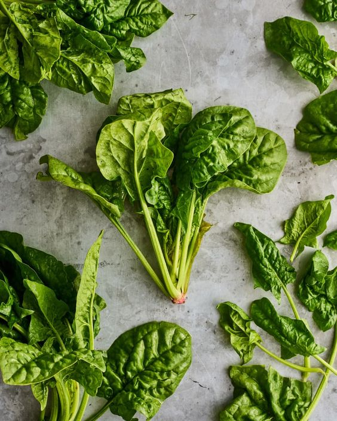 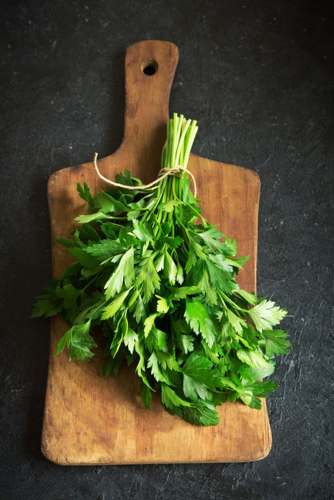 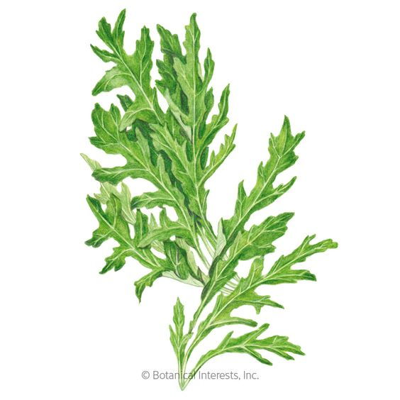 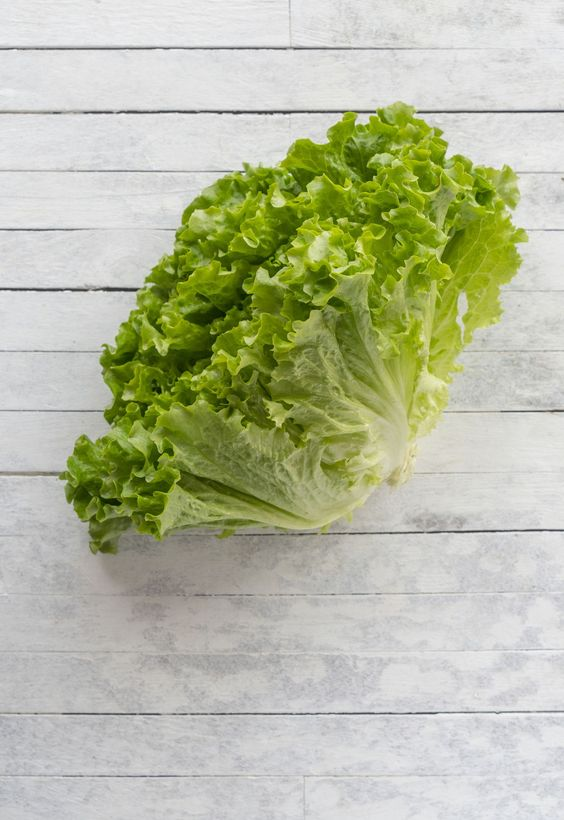Faydaları: Zengin lif kaynakları olan, düşük karbonhidrat ve yağ oranlarıyla hemen hemen her öğünü olan yeşil yapraklı sebzeler, kalp-damar sağlığını destekler, kemikleri güçlendirir ve cilt dokusunu iyileştirir. Bağırsak florasının sağlıklı oluşunu destekler, böbrek fonksiyonlarını iyileştirir ve modu yükseltirler. Düşük kalorileri sayesinde farklı diyet türlerinde de tercih edilebilir.
Yetiştirilmesi: Koyu yeşil yapraklı sebzeler, yapraklı yeşillikler ya da kısaca yeşillikler olarak da adlandırılan yeşil yapraklı sebzeler, yenilebilir bitki yapraklarıdır. Yeşil yapraklı sebzeler, çok zengin toprağa ihtiyaç duymaz, ancak bol güneş ve düzenli sulama isterler. Genellikle sığ köklü bitkiler olma eğilimindedirler. Hızlı büyümeleri ve kolay bakılmaları sayesinde bahçede de evde de kolayca yetiştirebilirler. Bazı yeşil yapraklı sebzeleri çiğ yiyebilirken, diğerleri pişirmeyi gerektirebilir. Adından da anlaşılacağı gibi, bu sebzeler genellikle yeşil renklerinden ve yenilebilir yapraklarından tanınabilir.
Örnek yeşil yapraklı sebzeler: Ispanak, marul, maydanoz, pazı, su teresi, roka, kale, semiz otu, nane, fesleğen gibi yeşilliler bu grupta yer alır. Mis kokulu bir ıspanak yemeği ya da cevizli roka salatası gibi seçeneklerle sofralarınızdaki yeşil tabakları artırabilirsiniz.
Turpgiller, çeşitli çorbalara, salatalara, tencere yemeklerine, kızartmalara ve daha fazlasına dahil olabilen en uyumlu sebze çeşitleri arasındadır:
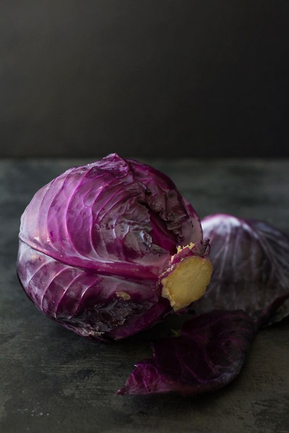 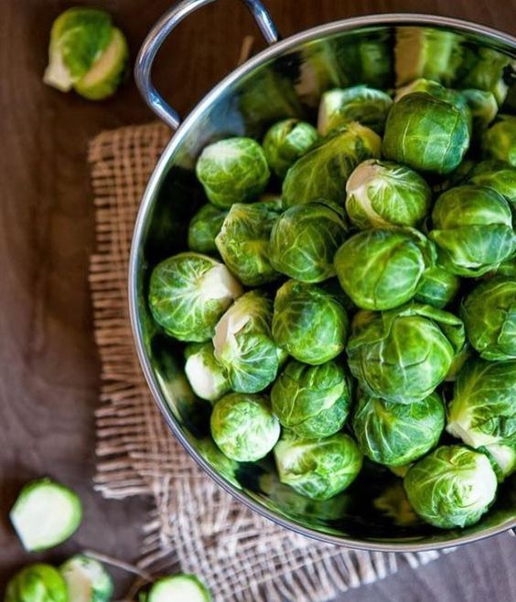 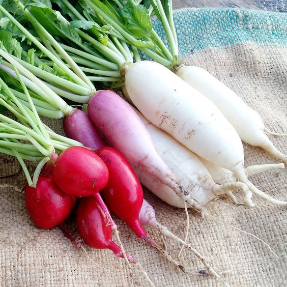 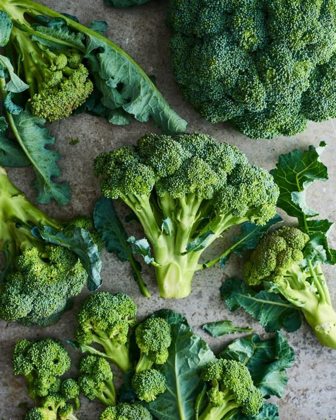Faydaları: Zengin antioksidan kaynaklarıdır. Kardiyovasküler sağlığı desteklerler. İnflamatuar etki göstererek vücudun savunma mekanizmasını güçlendirirler. Östrojen dengesinin sağlanmasına yardımcı olurlar. Ayrıca, kan şekerini de dengelerler.
Yetiştirilmesi: Turpgiller, iyice büyüyüp gelişmeleri için tam güneş ışığına ihtiyaç duyarlar. Ilıman bir iklimde ve nötr ile hafif asitli bir toprağı tercih ederler. Yetişmek için geniş alan isterler, o nedenle ekim işlemleri yapılırken tohumlar arasında yeteri kadar boşluk bırakılması gerekir. Aradaki boşluklar ne kadar fazla olursa olası zarar durumlarında turpgilleri kontrol altında tutmak o kadar kolay olur. Çeşit çeşit turpgil familyasından sebzelerle görsel bir renk şöleni yaratmak mümkündür. Yeşilden mora uzanan bir gökkuşağı isterseniz hem bahçenizde hem öğünlerinizde turpgillere şans verebilirsiniz.
Örnek turpgiller:Turp, şalgam, mor lahana, Brüksel lahanası, brokoli, karnabahar, kara lahana, alabaş, Çin lahanası turpgiller ailesinde yer alırlar. Fırında enfes bir brokoli ya da bol lahanalı lezzetli bir coleslaw turpgillerden faydalanmanın en lezzetli yolu olabilir.
Gece gölgeleri, gece gölgesi sebzeleri, gölge sebzeleri, itüzümü ya da nightshades adıyla tanımlanan bu grup, üzerine yapılan araştırmalarda tartışmaların olduğu sebzeleri içerir:
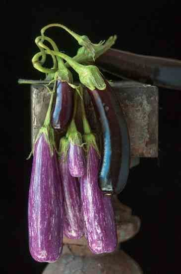 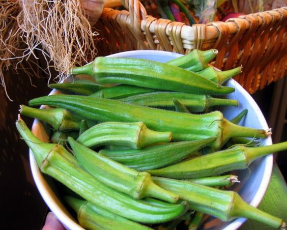 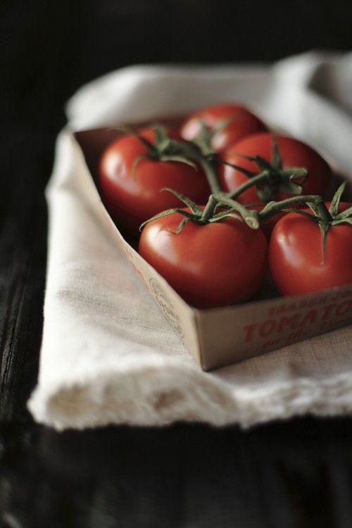Faydaları: Sıra geldi en gizemli sebze türüne… Bu grupta yer alan sebzelerin yararlı mı zararlı mı olduğuna dair çelişkiler sürmektedir. Gece gölgesi sebzeleri alkaloidler açısından zengindir. Alkaloidlerin bir kısmı insan sağlığı üzerinde olumlu etkilere sahipken, bazıları da olumsuz durumları tetikleyebilir. Koruyucu etki sağlamalarının, bağışıklık güçlendirmelerinin yanı sıra bağımlılık yapıcı etki gösterdikleri için gece gölgesi sebzelerini tüketirken kontrollü ve dikkatli olmak gerekir.
Yetiştirilmesi: Gece gölgesi sebzeleri oldukça farklı özelliklere sahip sebzeleri içerdiği için nasıl yetiştirildiklerine dair genel bir yorum yapmak pek mümkün değildir. Örneğin, bu grubun en sık tüketilen sebzelerinden olan domates ve patlıcan neredeyse birbirine zıt yetiştirme koşullarına sahiptir. Patlıcan, sulu toprakları sevmez; kuraklığa dayanıklıdır ve orta kumlu, iyi havalandırılan toprakta en verimli şekilde yetişir. Öte yandan domates fideleri bol suya ihtiyaç duyar.
Örnek gece gölgesi sebzeleri: Patlıcan, domates, kırmızı biber, dolmalık biber, cherry domates, bamya gece gölgesi sebzelerine örnektir. Fırında patlıcan ve domatesli bir yaz salatası sofralarınıza gece gölgesi sebzelerini eklemenize yardımcı olabilir. Ancak, bu gruptaki sebzeleri tüketirken porsiyon kontrolüne ekstra özen göstermeniz gerekir. Ek olarak; tütün de bu grupta yer alır. Ayrıca morfin ve kinin de bu grupta yer alan besinlerdeki alkaloiti içeren iki bitki bazlı ilaç örneğidir. Etkili bir adaptojen olan Ashwagandha da gölge sebzeleri içinde bulunur. Çeşitli baharatlar ve ketçap gibi soslar da bu gruptan elde edilebilir.